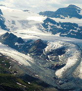
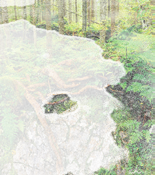
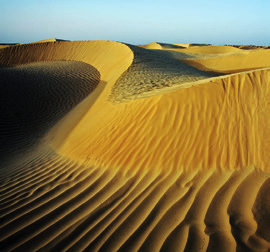
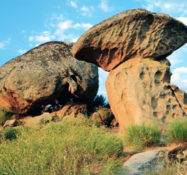
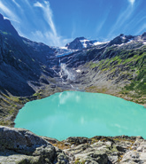
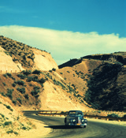
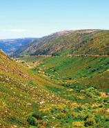

Un glaciar es una acumulación de hielo en la superficie terrestre que se desplaza por efecto de la gravedad. Existen glaciares que ocupan extensas áreas continentales cerca de los polos y otros de alta montaña.
Glaciar de alta montaña
El glaciar de alta montaña se forma en áreas donde la nieve se acumula y se convierte en hielo. Su forma es cóncava, y si el hielo se funde, origina un lago glaciar.

Glaciar de montaña
Formas de glaciares
Circo glaciar: Es donde se acumula la nieve y se convierte en hielo.
Lengua glaciar: Es el hielo que desciende por la ladera excavando a su paso un valle glaciar que tiene forma de U.
Frente glaciar: Es la zona donde se funde el hielo y deja un depósito heterogéneo de rocas denominado morrena.
El viento
El movimiento del aire sobre la superficie de las rocas ocasiona el modelado del relieve, sobre todo en las zonas desprovistas de vegetación. La acción erosiva del viento se incrementa cuando lleva partículas suspendidas, porque estas tallan las rocas al chocar con ellas.
Formas de erosión

Suelo del bosque
Formas de depósito

Dunas de desierto
Acción geológica de los seres vivos
Los seres vivos son capaces de modelar el relieve a través de su actividad, creando estructuras o destruyéndolas.
Los arrecifes se forman por la acumulación de los esqueletos de carbonato de calcio de corales coloniales en aguas poco profundas.
Las raíces de los árboles y los animales excavadores producen una disgregación en las rocas y contribuyen a su meteorización.
El ser humano modifica el relieve erosionando las rocas para la construcción de explotaciones mineras, viviendas e infraestructuras.

Formación rocosa equilibrada

Lago montañés

Coche vintage en una carretera sinuosa

Paisaje de valle escénico